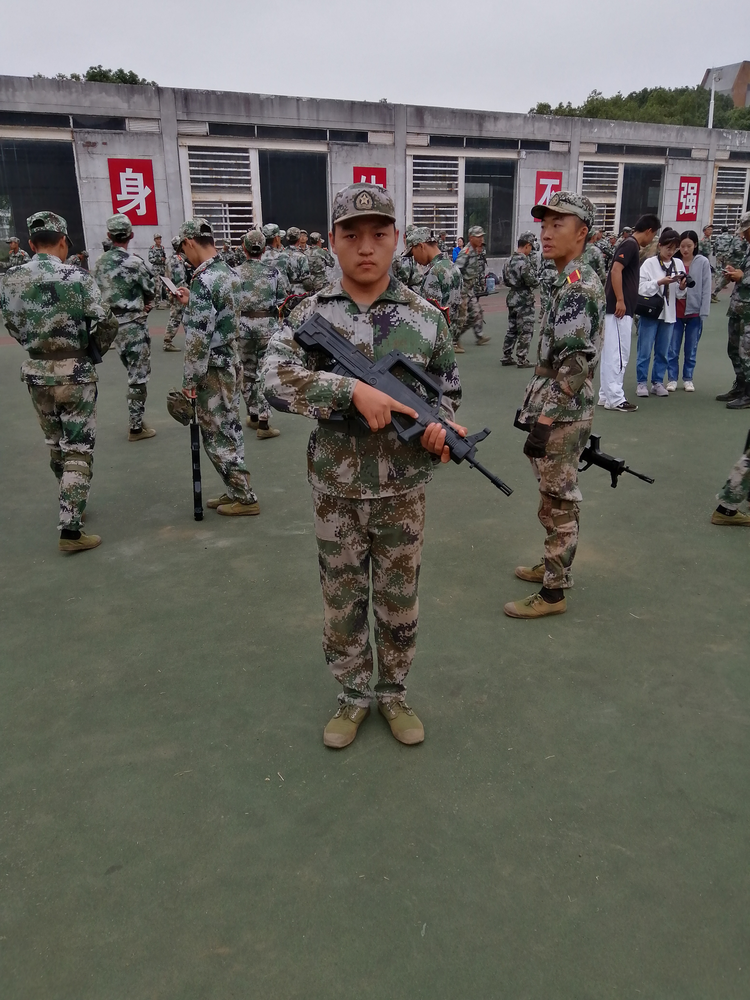
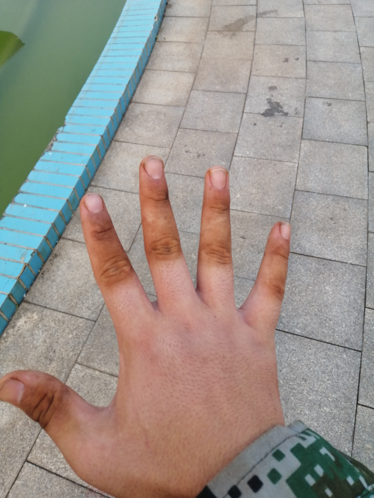
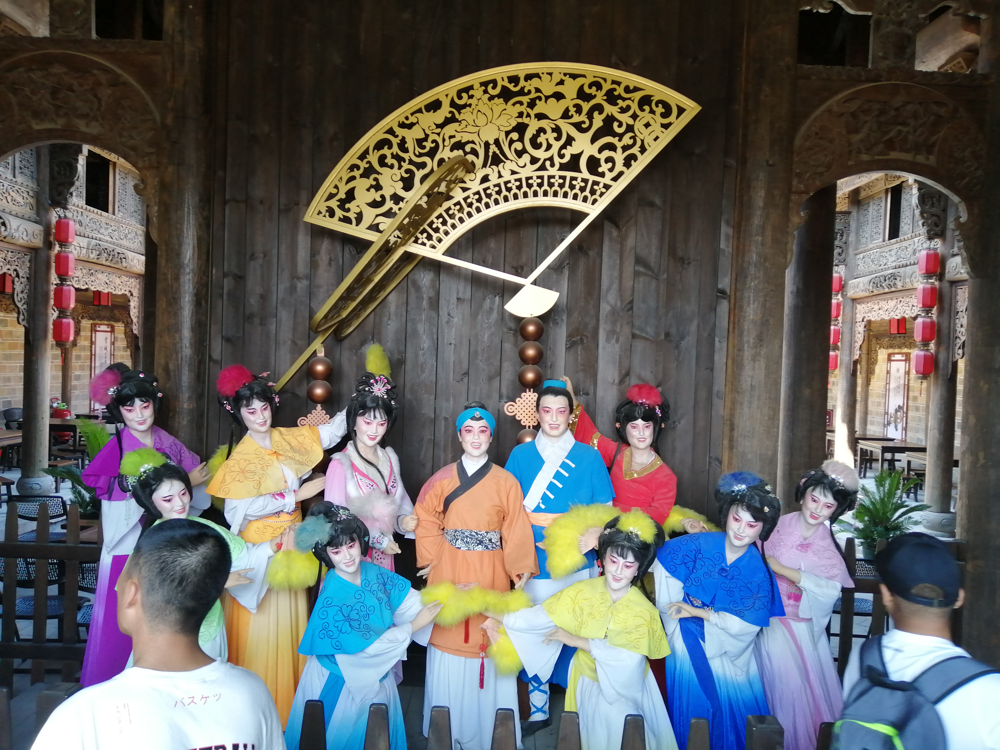

|
这是军训七天后，我们排和教官在图书馆前的合影。在这七天，教官教了我们一些基本的内容。第二天，我们将会分方阵，就不会在一块了。 |  | 最终我被分到了战术方队，这个最苦最累的方阵。每天训练完一身土。但是我觉得这是军训最有意义的一个方阵。我们的教官都是当过兵的，他们的说话习惯，行事作风，都让我充分的感受到军旅气息。真的很喜欢这个方阵。 |  | 一次下训后的手。 |
|---|
|  | 为了庆祝祖国诞生七十周年，我们学校组织了一次研学活动，地点是在长沙铜官窑古镇。1998年打捞出一艘装满中国文物的沉船。文物的发源地铜官窑也因此被人关注。期间，我们观看了关于这艘沉船‘黑石号’的一次演出，之后我们还参观了当时留下的文物，最后我们体验了5D影院。总之，这是一次非常有意义的研学活动，我们体验了很多第一次，也有很多的收获，同时也使我们的军训生活更加丰富多彩。 |
|---|